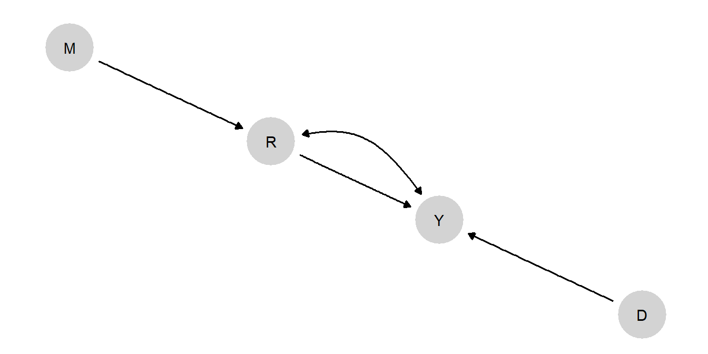

10 Integrated Inferences Applications
Chapter summary
Parallel to the single-case process-tracing analyses in Chapter 8, we show how we can use data from multiple cases to update our models of inequality and democratization and of institutions and growth. We then use the updated models to draw both population-level and case-level inferences. These applications illustrate situations in which learning is minimal and in which it is more substantial, and demonstrate how the probative value of process-tracing clues can be empirically established through model-updating.
In Chapter 8, we undertook single-case process-tracing from causal models about inequality and democratization and about institutions and growth. In that chapter, we took the model as given and sought to draw inferences about individual cases given data on those cases. In this chapter, which applies the multi-case setup in Chapter 9 to the same two substantive problems, the models become objects that we both learn from and learn about. We use data on a large set of cases to update our beliefs about the general model and then use this “trained” model to make inferences about causal questions posed at both the population and the case level.
In the process-tracing applications, we had to posit beliefs about the distribution of (or population-level share) of nodal types for each node in the model. For multi-case process tracing, in contrast, we posit a prior distribution over the distribution of nodal types—that is, a distribution over \(\lambda\). Because we set a prior distribution over nodal types (rather than fixing proportions), we can now update on these population-level distributions as the model confronts data.
The same applies to beliefs about confounding. Recall that we allow for unobserved confounding by allowing \(\lambda\) to include beliefs about the joint distributions of nodal types; we set priors on these joint distributions as well. In the inequality and democratization application, we allow for unobserved confounding between inequality and mobilization: The possibility that inequality may be more or less likely in places where inequality would induce mobilization. In the institutions and growth application, we allow for unobserved confounding between institutions and growth. In both examples, we refrain from expressing informed prior beliefs about the direction or magnitude of the confounding; we merely allow for the possibility of confounding and set a flat prior over its direction and magnitude. Furthermore, in the institutions and growth example, we show how we can usefully learn about the confounding directly from the data.
10.1 Inequality and Democratization
We begin with the same basic model that we used in Chapter 8, with inequality (\(I\)) potentially affecting democratization (\(D\)) both through a direct pathway and through an indirect pathway mediated by mobilization (\(M\)). International pressure (\(P\)) is also a “parent” of democratization.
Further, we impose the same set of monotonicity restrictions, ruling out a negative effect of inequality on mobilization, a direct positive effect of inequality on democratization, a negative effect of mobilization on democracy, and a negative effect of pressure on democratization. Note that this setup allows for inequality to have a positive (through mobilization) effect on democratization, a negative (direct) effect on democratization, or no effect at all.
Finally, we allow for confounding. The theoretical intuition we want to capture in the model is that the level of inequality could be endogenous to inequality’s effect on mobilization. In particular, in places where inequality would pose a mobilizational threat, governments may work harder to reduce inequality. To allow for this possibility, we need to create distinct elements of \(\lambda\) representing the conditional distribution of \(I\)’s nodal types given \(M\)’s: One parameter for \(\theta^I\)’s distribution when \(M\)’s nodal type is \(\theta^M_{01}\), and another parameter for \(\theta^I\)’s distribution when \(M\)’s nodal type is something else.
This model, with confounding, is represented graphically as in Figure 10.1. The possibility of confounding is represented with the bidirected edge, connecting \(I\) and \(M\).
10.1.1 Data
To train the model, we add data.
As in Chapter 8, we will confront the model with data drawn from our coding of the case narratives in the Supplementary Material for Haggard and Kaufman (2012). However, rather than implementing the analysis case-by-case, we now derive leverage from the joint distribution of the data available across all cases.
Table 10.1 gives a snippet of the data.
| Case | P | I | M | D |
|---|---|---|---|---|
| Afghanistan | 1 | 0 | ||
| Albania | 0 | 0 | 1 | 1 |
| Algeria | 0 | 0 | ||
| Angola | 1 | 0 | ||
| Argentina | 0 | 0 | 1 | 1 |
| Bangladesh | 0 | 0 | 0 | 1 |
Note that this dataset takes a non-rectangular form common to much multi-method research. While we have data on the main causal variable of interest (\(I\)) and the outcome (\(D\)) for all cases, Haggard and Kaufman’s collection of more detailed case evidence was conditional on a case’s outcome, \(D=1\): They gathered qualitative data on the presence of international pressure and the presence of mass-mobilization only for those cases that democratized. This is not uncommon when selecting cases for process-tracing from a larger population. The analyst often reasons that more can be learned about how an outcome arises by focusing on cases where the outcome of interest has in fact occurred. (We assess this case-selection intuition, in the context of model-based inferences, in Chapter 13.) The result is a nested mixed design in which we have “thin” (\(I\) and \(D\)) data on a large set of cases and “thicker” data on a subset of those cases.
The raw correlations between variables are shown in Table 10.2. Some correlations are missing because, as just noted, data on some variables were only gathered conditional on the values of others. The correlations we do see are not very strong. There is, in particular, a weak overall relationship between inequality and democratization—though this is consistent with inequality having heterogeneous effects across the sample. The strongest correlation in the data is between \(P\) and \(M\), which are assumed to be uncorrelated in the model, though this correlation is also quite weak.
| P | I | M | D | |
|---|---|---|---|---|
| P | 1.000 | 0.157 | -0.177 | |
| I | 0.157 | 1.000 | 0.114 | -0.154 |
| M | -0.177 | 0.114 | 1.000 | |
| D | -0.154 | 1.000 |
10.1.2 Case-level queries
With data and model in hand, we can now update our model using the procedure described in Chapter 9 to get a posterior distribution over \(\lambda\). From this posterior over \(\lambda\), we can then generate posterior beliefs over all causal relations in the model.
We then use our posterior over \(\lambda\) to make claims about the probability that inequality mattered for democratization in cases with different \(I\), \(D\), and potentially \(M\) and/or \(D\) values. This is similar to the question we posed when we undertook process-tracing in Chapter 8, but we are now using a model that has been trained on data. In other words, we are using knowledge of observed relationships across a large number of cases to inform our beliefs about what we should conclude when we observe particular evidentiary patterns in a specific case.
Our results are graphed in Figure 10.2. In the first two columns of the figure, we consider what we would conclude in a case that democratized. In the first column, we ask about the probability that low inequality caused democratization in an \(I=0, D=1\) case. In the second column, we ask about the probability that high inequality caused democratization in an (\(I=1, D=1\)) case. In each column, we assess how our answers would differ based on potential observations of mobilization and international pressure in the case at hand. We note that, for all results here, we are calculating \(\hat{\pi}(Q|D)\) as defined in Chapter 9: That is, we are drawing inferences about case-level probabilities from population shares, treating the case about which we want to draw an inference as “uninformative” about those population shares.
Overall, we find that the results are remarkably similar to those derived from the untrained model in Chapter 8: This is clear from a comparison of the patterns in Figure 10.2 here to those in Figure 8.3. There are some cases, especially in the \(I=0, D=1\) column, for which \(M\) appears to be slightly less informative under the trained model than under the untrained model. But the main takeaway is that the observed data here do not seem to substantially shift our beliefs from those implied by the theoretical assumptions that we originally built into the model.
This comparison does not tell us definitively how much we have learned from the data. It is possible, for instance, that while our beliefs about these queries shift little, there could be (possibly countervailing) shifts in the underlying beliefs about type shares out of which the queries are composed. We examine in more detail in Section 10.1.4 below whether the multi-case data in this application yield updating about underlying type shares.
10.1.3 Population-Level Queries
We can also pose questions to the model at the population level. One set of questions we can ask of the updated model is about the share of cases for which inequality has a positive effect or has a negative effect on democratization. We can pose this question at different levels of conditioning. For instance, we can ask:
For all cases. For what proportion of cases in the population does inequality have a positive effect on democratization? For what proportion a negative effect?
For all cases with a given causal state and outcome. Among those cases that in fact had high inequality and democratized, for what proportion was the high inequality a cause of democratization? Among those cases that in fact had high inequality and did not democratize, for what proportion did the high inequality prevent democratization?
For cases with a given causal state and outcome, and with or without mobilization and pressure. We can also drill down to make inferences about smaller subgroups of the population. For what share of high-inequality, democratizing cases with mobilization did inequality cause the outcome? For what proportion without mobilization? Likewise, for the presence or absence of international pressure? We can, of course, ask parallel questions about subgroups with high inequality and no democratization.
For each of these population-level questions, we can generate a posterior distribution that describes our beliefs, by building from our posterior over \(\lambda\). We can define each query quite simply in terms of the causal types that correspond to the effect of interest and then calculate the share of the subgroup in question that has a causal type that satisfies the query. For instance, for query 2 above as applied to the \(I=1, D=1\) subgroup: for each \(\lambda_i\), we add up the population share of those causal types that give us both \(I=1, D=1\) and a positive effect of \(I\) on \(D\), and divide that by the sum of the shares of all causal types that give us \(I=1, D=1\).
In Figure 10.3, we graph posterior distributions for the full set of queries. In the first column, we are concerned with positive effects of \(I\) on \(D\), and in the second column with negative effects.

Starting with the first column, in the first row we are simply asking for what proportion of cases in the population does \(I\) have a positive effect. We can see that the share of cases with positive effects is estimated to be very low, with a good deal of confidence. In the next row—where the attribution question presupposes we know the values of \(I\) and \(D\)—we see that the expected share of positive effects is considerably higher for the subgroup of the population that in fact experienced high inequality and democratization, though uncertainty about this share is relatively high. The expected proportion of positive causal effects is believed to be even higher among those \(I=1, D=1\) cases in which mobilization occurred—and higher again when an alternative cause (international pressure) is absent. Again, however, though our uncertainty about these shares is also great.
We also see that we believe that democratization is not caused by inequality in those \(I=1, D=1\) cases in which mobilization is absent. Interestingly, however, this result derives purely from the model restrictions, rather than from the data: Under the restrictions we imposed, a positive effect of inequality can operate only through mobilization.
Turning now to the cases in which democratization did not occur, the second column of Figure 10.3 asks for what proportion of cases overall inequality has a negative effect on democratization; for what proportion of \(I=1, D=0\) cases inequality prevented democratization; and this latter query conditional on different clue realizations. We see that inequality appears, overall, more commonly to prevent democratization than to cause it. We are, moreover, most confident that inequality played a preventive role in that subgroup in which there was both mobilization and international pressure—both of which could have generated democratization—but still no democratization occurred (second-to-last plot in the second column).
10.1.4 Explorations: How Much Do We Get from the Model versus the Data?
The lack of movement in our case-level queries, in Section 10.1.2, raises the question of whether or how much we are learning from the data in this analysis, as compared to the beliefs that we built into the model at the outset, including through the monotonicity restrictions that we imposed. To examine this in greater detail, in Figure 10.4 we plot posteriors on parameter values within each family of parameters. The families correspond to nodal types for each node except \(M\). For \(M\), to reflect the confounding that we have allowed for between \(I\) and \(M\), we have one family for nodal types for \(M\) conditional on \(I=0\) and another for nodal types for \(M\) conditional on \(I=1\).
Recall that we had eliminated nodal types that violated monotonicity (e.g., those representing negative effects of \(I\) on \(M\) or of \(M\) or \(P\) on \(D\)) and then placed flat priors on the remaining nodal types within each family. In other words, in our priors the plotted points in each graph would simply fall along a vertical line. The question now is whether we see a significant divergence from the vertical alignment within each set.
From inspection of Figure 10.4, we see that we do. For the root nodes, \(P\) and \(I\) we see that we have adjusted to expect \(P=0\) and \(I=1\) to be relatively more common. For \(M\), we have adjusted to expect that \(M=1\) regardless of \(I\) for cases assigned to \(I=0\), and to expect that \(M=0\) regardless of \(I\) for cases assigned to \(I=1\). Thus, we expect mobilization to be negatively correlated with inequality, but we have moved away from expecting that the relationship between the two is causal: note the low share now placed on the \(M.01\) parameters. For \(D\), the most dramatic movement is in favor of the null effect represented by the top nodal type: As compared to our priors, we now more strongly believe that democratization will occur regardless of inequality, mobilization, or international pressure (the interpretation of the other nodal types is given in this footnote1).
In all, we can see quite clearly that we have learned from the data about the shares of types in the population, and that the direction of movement is overall toward putting less weight on causal effects among nodes than our flat priors had implied.
10.2 Institutions and Growth
We now return to our model of institutions and growth from Chapter 8. Rather than presupposing the probability of different nodal types, however, we seek to build up those beliefs from data from a large set of cases, using the trained model to then answer a set of both population- and case-level queries.
The structural causal model that we use (shown in Figure 10.5) is the same model that we used in Chapter 8. However, we build in weaker assumptions, given that we aim to learn about our model from the data. Specifically, we drop two of the monotonicity assumptions: We no longer assume that growth (\(Y\)) is monotonic in institutions or in mortality. The only monotonicity assumption that we retain is with respect to the instrument, mortality (\(M\)): Its effect on institutions (\(R\)) cannot be positive. Otherwise, we form flat priors over all nodal types in the model — building in no assumptions other than the causal structure and monotonicity of \(M\)’s effects. Moreover, as in Chapter 8, we allow for confounding between institutions and growth, allowing for other unobserved common causes of these variables.

10.2.1 Data
We draw our data from the supplementary material for Rodrik, Subramanian, and Trebbi (2004)’s paper on the long-run economic effects of institutions. We dichotomize all variables at their sample median, and so are working with somewhat coarser data than used in the original paper. Table 10.3 provides a snippet of the dataset.
| Country | Distance (D) | Mortality (M) | Institutions (R) | Growth (Y) |
|---|---|---|---|---|
| Angola | 0 | 1 | 0 | 0 |
| Argentina | 1 | 0 | 1 | 1 |
| Australia | 1 | 0 | 1 | 1 |
| Burundi | 0 | 1 | 0 | 0 |
| Benin | 0 | 1 | 0 | 0 |
| Burkina Faso | 0 | 1 | 0 | 0 |
Unlike in the inequality application, the data here form a rectangular dataset: Rodrik, Subramanian, and Trebbi (2004) collected measures for all variables for all cases, rather than gathering more detailed evidence only on a subset of cases (as Haggard and Kaufman (2012) did in process-tracing only the democratizing cases).
The raw correlations between variables are shown in Table 10.4. We note that these bivariate relationships are, in general, much stronger (despite the coarsening) than in the data used in the inequality and democracy application. One thing to notice is that \(M\) is, in fact, more strongly correlated with \(Y\) than \(R\) is—which might give pause about the exclusion restriction, which assumes that \(M\)’s effect on \(Y\) runs only through \(R\). Also, \(M\) and \(D\)—which are, by assumption, independent in our model—are quite strongly correlated. We will return to these apparent tensions between our DAG and the data when we consider model evaluation in Chapter 16.
| D | M | R | Y | |
|---|---|---|---|---|
| D | 1.000 | -0.373 | 0.240 | 0.291 |
| M | -0.373 | 1.000 | -0.369 | -0.572 |
| R | 0.240 | -0.369 | 1.000 | 0.494 |
| Y | 0.291 | -0.572 | 0.494 | 1.000 |
10.2.2 Queries
With the data in hand, we now update our model to derive posteriors on the distribution of model parameters, from which we can then generate answer any causal query about the model.2
Before looking at the more specific case- and population-level queries, we first ask whether the data have changed our beliefs, using our priors as a baseline, about the effect of institutions on growth (possibly conditional on mortality and distance from the equator). The results in Table 10.5 indicate that they have: whereas our priors implied that \(R\) has a zero average effect on \(Y\), our posterior belief is that \(R\) has a positive average effect on \(Y\), raising the probability of good development outcomes by around 15 percentage points. Our belief about this average effect is the same for cases with high and low settler mortality.3 We do have different beliefs about institutions’ effects on the subgroups of the population closer to and further from the equator, however, with \(R\)’s effect stronger for those countries that are more distant from the equator. In this sense, \(D\) and \(R\) are complements—a feature that can also be seen immediately from regression analysis.
| using | given | mean | sd | cred.low | cred.high |
|---|---|---|---|---|---|
| posteriors | - | 0.00 | 0.10 | -0.20 | 0.20 |
| posteriors | - | 0.15 | 0.07 | 0.01 | 0.30 |
| posteriors | M==0 | 0.15 | 0.07 | 0.01 | 0.30 |
| posteriors | M==1 | 0.15 | 0.07 | 0.01 | 0.30 |
| posteriors | D==0 | 0.13 | 0.10 | -0.06 | 0.32 |
| posteriors | D==1 | 0.18 | 0.10 | -0.01 | 0.37 |
10.2.2.1 Case-level queries
We now turn to case-level inference. Similar to our procedure in the democratization example, we do so by considering cases with four different possible combinations of growth outcomes and institutional quality. For each type of case, we ask whether the cause plausibly explains the outcome—and how beliefs about that effect would change if we learned about settler mortality (\(M\)), distance from the equator (\(D\)), or both. This gives us 16 possible combinations of underlying values of the four variables, with four possible evidentiary situations: we observe only \(R\) and \(Y\); we additionally observe \(M\) only; we additionally observe \(D\); or we additionally observe both \(M\) and \(D\). We plot our beliefs about the query for each evidentiary situation and case type. By comparing inferences across evidentiary situations, we can see how informative our \(M\) and \(D\) clues are about case-level causation.
In Figure (Figure 10.6), we plot our beliefs both as derived from the untrained model (using priors) and as derived from the model trained by the data (using posteriors). (Recall also that the model here is different from the one we used in Chapter 8 in that we now do not impose monotonicity restrictions other than that between \(M\) and \(R\), so the inferences using priors here will not be the same as they were in the process-tracing exercise in that chapter.) Because we have built so little prior knowledge into our model, the \(M\) and \(D\) clues are always uninformative in the untrained model; regardless of what we observe, we believe there is a \(0.5\) probability that \(R\) mattered for \(Y\) in every case. But we plot these inferences to throw into sharp relief the fact that, in this application, the probative value of the clues derives entirely from data rather than from theoretical assumptions.
We can see that when we encounter a case with weak institutions and low growth (first column), using the trained model will lead us to believe it likely that the former caused the latter. We see a parallel result for cases with strong institutions and growth (last column). We can also see in both columns, by comparing the posterior to the prior, that these inferences are heavily grounded in the data we have used to update the model, rather than in prior assumptions. When we turn to the cases with weak institutions and high growth, and vice-versa, we see that the updated model leads us to believe it less likely that institutions generated the outcome.
Moreover, if we want to collect more information about a given case, both settler mortality (\(M\)) and distance from the equator \(D\) are informative. Turning first to distance, consider an \(R=0, Y=0\) state. When we additionally observe that this state is close to the equator (\(D=0\)), we become less confident institutions were the culprit in this case; but we become more confident that institutions were the problem if we observe the state to be far from the equator (\(D=1\)). Likewise, for an \(R=1, Y=1\) case, proximity to the equator makes us more confident that the strong institutions helped while distance from the equator makes us less so. This last result may seem surprising given our beliefs that \(R\) and \(D\) are complements. \(R\) and \(D\) may well be complements for the average treatment effect, but, conditional on \(R=1\) (and \(Y=1\)) knowing that \(D=1\) reduces confidence that \(R\) did the work.
Second, unlike in the untrained process-tracing model, settler mortality is informative in the updated model (even though it is not for average treatment effects). Strong institutions are now believed to be more likely to have caused high growth in places with lower mortality (see, e.g., Malaysia and Brazil). This result is in line with the confounding logic we discussed in Section 8.2.3.2 of Chapter 8 in the context of process tracing, where we stipulated beliefs about selection effects. Note, however, that we have not imposed beliefs about confounding in the present analysis. Rather, here, we have learned about the confounding from the data. Put differently, correlations in our beliefs about nodal types have emerged from updating. Figure 10.7 shows posteriors for our beliefs about the conditional probability of \(\theta^Y\) given \(\theta^R\). Recall that we began with flat expectations across the shares represented in this figure. While credibility intervals are large, we can see that we now expect \(\theta^Y = \theta^Y_{0011}\)—a type for which \(Y\) responds positively to \(R\) regardless of \(M\)—to be more common among cases in which institutions respond negatively to settler mortality (\(\theta^R = \theta^R_{01}\)). This is consistent with a world in which settlers responded to low mortality by building strong institutions specifically in those places where they rationally expected strong institutions to help.
Warning: Using the `size` aesthetic with geom_path was deprecated in ggplot2 3.4.0.
ℹ Please use the `linewidth` aesthetic instead.We can see the learning about this confounding more starkly in Figure 10.8. In each panel of the figure, we plot a summary of our beliefs about the probability that institutional strength has a positive effect on growth against our beliefs that settler mortality has a negative effect on institutional strength. In the left panel, we plot this relationship for our priors, with each point representing one draw from our prior over \(\lambda\). As we can see, the two sets of beliefs about effects are completely uncorrelated in our priors. In the right panel, we plot our joint posterior for these two effects: Each point represents our belief about both effects under a single draw from our posterior over \(\lambda\). We can see here that the two sets of beliefs are correlated in the updated model: The more strongly we believe that strong institutions are helpful for growth, the more strongly we also believe that low settler mortality causes strong institutions.
10.2.2.2 Population-Level Queries
Again the updated model can be used not just to inform inferences about cases but also to make population-level claims. In Figure 10.9, we graph the posteriors for a set of queries, conditional on observed data on institutional quality, distance, and settler mortality. The queries plotted here are parallel to the population-level queries that we answered for the inequality and democracy model, with the attribution questions presupposing knowledge of \(R\) and~\(Y\).

In the first row of graphs, we can see that we estimate both positive effects and negative effects of institutions on growth to be somewhat common in the population. However, we believe positive effects to be more common than negative effects. Similarly, in the second row we can see that we think that strong institutions caused the high growth in a higher share of \(R=1, Y=1\) cases as compared to the share of \(R=1, Y=0\) cases in which we think strong institutions caused the weak growth.
Looking within more refined subgroups, we see some variation in beliefs about the shares of cases with causal effects, albeit with quite wide credibility intervals. The largest difference is, among those cases close to the equator, between those with high and with low settler mortality. Within the \(R=1, Y=1, D=0\) subgroup, we think positive effects are more common among those cases that experienced low mortality than among those that experienced high mortality, consistent with the learning about confounding that we have discussed above. Parallel to thi result, and in keeping with the notion of strategic institutional choice by settlers, we find that the low-mortality cases are also ones in which we think it less likely that institutions had an adverse effect on growth in the \(R=1, Y=0, D=0\) subgroup.
10.2.3 Explorations: Direct and Indirect Paths from M to Y
Our glance at the raw data suggested that mortality and growth are high, even relative to the correlation between institutions and growth. This might lead us to wonder whether our model is correct—in particular, whether we should allow for a direct path from \(M\) to \(Y\). In this subsection, we make and update a model in which we allow for a direct arrow from \(M\) to \(Y\), as well as the mediated path that runs from mortality to institutions to growth. We can then pose queries about how settler mortality affects long-run growth, asking how much of the effect runs through institutions and how much of this effect runs through all other channels (i.e., “directly”).
To maintain simplicity here, we exclude \(D\) from the new model and work with a DAG of the form: \[M \rightarrow R \rightarrow Y \leftarrow M; Y \leftrightarrow R\]
So we now have both a direct path from \(M\) to \(Y\) and the mediated path from \(M\) to \(Y\) that runs through \(R\). We maintain the possibility of unobserved confounding between \(R\) and \(Y\). Note that dropping \(D\) represents a permissible reduction of the original model since \(D\) was a parent to only one node in that model.
Warning in
kable_styling(kabble(mutate(select(read_rds("saved/10_RST_large_query.rds"), :
Please specify format in kable. kableExtra can customize either HTML or LaTeX
outputs. See https://haozhu233.github.io/kableExtra/ for details.| Effect | label | query | mean | sd | cred.low | cred.high |
|---|---|---|---|---|---|---|
| Total | Y[M = 0] - Y[M=1] | Y[M = 0] - Y[M=1] | 0.27 | 0.08 | 0.12 | 0.42 |
| Direct 0 | Y[M = 0, R = R[M=0]] - Y[M=1, R = R[M=0]] | Y[M = 0, R = R[M=0]] - Y[M=1, R = R[M=0]] | 0.19 | 0.09 | 0.02 | 0.36 |
| Direct 1 | Y[M = 0, R = R[M=1]] - Y[M=1, R = R[M=1]] | Y[M = 0, R = R[M=1]] - Y[M=1, R = R[M=1]] | 0.21 | 0.09 | 0.04 | 0.38 |
| Indirect 0 | Y[M = 0, R = R[M=0]] - Y[M=0, R = R[M=1]] | Y[M = 0, R = R[M=0]] - Y[M=0, R = R[M=1]] | 0.06 | 0.07 | -0.05 | 0.23 |
| Indirect 1 | Y[M = 1, R = R[M=0]] - Y[M=1, R = R[M=1]] | Y[M = 1, R = R[M=0]] - Y[M=1, R = R[M=1]] | 0.08 | 0.07 | -0.03 | 0.24 |
In our pathway analysis, we will distinguish between the “indirect” and “direct” effects of settler mortality on growth. We define these quantities more formally below, but first, we give a basic intuition for the difference. By an “indirect” effect, we mean an effect that runs along the \(M \rightarrow R \rightarrow Y\) pathway: an effect that, for its operation, depends both on mortality’s effect on institutions and on institutions’ effect on growth. By a “direct” effect, we mean an effect that operates via the direct \(M \rightarrow Y\) pathway. Importantly, labeling this effect “direct” does not imply that there are no mediating steps in this causal pathway. It means only that we have not included any of this pathway’s mediating steps in the DAG. Thus, the “direct” effect does not represent a specific alternative mechanism to the institutional one. Rather, it captures a residual: the effect of settler mortality on long-run growth that operates through all mechanisms other than the one mediated by institutions.
In Table 10.6, we report results for a pathway analysis at the population level. First, we report our posterior belief about the total average effect of settler mortality on long-run growth, with a posterior mean of 0.272. Then we report the portion of these effects that run through each pathway.
First, we pose two versions of the direct-effects query, intended to get at the effect of settler mortality that does not run through mortality’s effect on institutions. To frame a direct-effects query, we need to imagine a manipulation in which the mortality level is changed, but institutions remain fixed. There are two versions of such a query, however. In the first version, labeled “Direct 0”, we report the expected change in long-run growth under an imagined manipulation in which we change mortality from \(0\) to \(1\) while fixing institutions at the value they would take on if settler mortality were set to \(0\). In the second version (“Direct 1”), we imagine the same change in mortality but fix institutions at the value they would take on if settler mortality were set to \(1\). The difference between these queries is potentially important since mortality’s direct effect might depend on institutional conditions. As we can see, we get quite similar posterior means from these two direct-effect queries (\(0.195\) vs. \(0.211\)).
We turn then to estimating the effect that is operating through institutions. This indirect-effects query asks the following: What change in growth occurs if we change institutions as they would change if there were a change in settler mortality but with settler mortality in fact held constant (so that no direct effect can be operating). Again, there are two versions of this query: The first (“Indirect 0”) holds mortality fixed at \(0\) while the second (“Indirect 1”) holds mortality fixed at \(1\). For both, we posit the change in institutions that would happen if mortality were changed from \(0\) to \(1\). As we can see from the fourth and fifth rows of Table 10.6, we get similar estimates of this indirect effect from the two queries (\(0.061\) and \(0.077\)).
Overall, Table 10.6 suggests that both causal pathways are in operation. Yet direct effects appear far stronger than indirect effects. That is to say, we estimate that more of settler mortality’s effect on long-run growth runs through channels other than the institutional mechanism, than runs through that mechanism. The strongest effect is estimated to be the direct effect with institutions fixed at whatever they would take on if mortality were high. We estimate the weakest pathway to be the indirect effect in places with low mortality. Note that the first query, the total effect, is equal to the sum of “Direct 0” and “Indirect 1” and (equivalently) to the sum of “Direct 1” and “Indirect 0”; this decomposition is documented, for instance, in Imai, Keele, and Tingley (2010).
With our updated model of the population in hand, we can now ask similar questions at the case level. Suppose, for instance, that we see a case that had high settler mortality and low growth; we also observe a suspected mediator of mortality’s effect, seeing that the case has weak institutions. One question we can ask about this case is the total case-level effect: What is the probability that high settler mortality caused low growth, through any mechanism, in this case, given our observations in this case? We can then delve further to ask about the pathway operating in the case: about the probability that settler mortality caused low growth through institutions or through an alternative pathway.
The results of these case-level pathway queries — drawn from a model informed by the large-\(N\) data — are reported in Table 10.7. In the top row, we see that the probability that high mortality was a cause of low growth in the case is estimated to be 0.648. We estimate the probability that high settler mortality caused the low growth through a noninstitutions pathway to be somewhat lower, at 0.542. And the probability that high settler mortality caused low growth, specifically via the institutional pathway, is much lower, at 0.252.
This result is quite striking: Even when institutions take precisely the form, we expect them to take if the institutional mechanism is operating (i.e., they are weak in a high-mortality, low-growth case), our trained model tells us that we should still believe it to be about twice as likely that high mortality mattered through a non-institutional mechanism than that it mattered via institutions. The results in Table 10.7 also have implications for the effects of alternative hypothetical manipulations. They suggest that changing mortality in this kind of case from high to low—while keeping institutions weak—would be more likely to improve outcomes than would keeping mortality high but changing institutions to whatever value they would take on if mortality were low.
Overall, these results suggest that any analysis of the long-run effects of settler mortality on economic growth that constrains such effects to run through institutions will likely get the story wrong. Notably, these findings also pose a challenge to the instrumental-variable strategy underlying Rodrik, Subramanian, and Trebbi (2004) and Acemoglu, Johnson, and Robinson (2001) analyses, which (via the exclusion restriction) involve the assumption that settler mortality affects growth only via institutions.
| query | Y[M = 0] > Y[M = 1] | Y[M = 0, R = R[M=1]] > Y[M = 1, R = R[M = 1]] | Y[M = 1, R = R[M=0]] > Y[M = 1, R = R[M = 1]] |
| Formula | Y[M = 0] > Y[M = 1] | Y[M = 0, R = R[M=1]] > Y[M = 1, R = R[M = 1]] | Y[M = 1, R = R[M=0]] > Y[M = 1, R = R[M = 1]] |
| given | M==1 & Y ==0 & R == 0 | M==1 & Y ==0 & R == 0 | M==1 & Y ==0 & R == 0 |
| Estimate | 0.65 | 0.54 | 0.25 |
| Given | M=1 & Y =0 & R = 0 | M=1 & Y =0 & R = 0 | M=1 & Y =0 & R = 0 |
10.3 Conclusion
We close with a few substantive and methodological conclusions from the analyses in this chapter.
Turning first to substantive conclusions from the inequality and democratization analysis, we saw in Figure 10.4 that most movements in our beliefs on nodal types went in the direction of reduced confidence in causal effects. We saw in particular a sharp increase in our posterior on the share of cases for which \(I\) has no effect on \(M\), and in the share of cases that would have democratized regardless of the values of all other nodes in the model. These findings tilt, above all, against strong confidence that inequality affects mass mobilization or that inequality, mobilization, or international pressure affected democratization during the period under examination. Something generated the Third Wave of democratization in the 1980s and 1990s, but these findings suggest that the democratizations we see are not well explained by patterns of inequality, either at the population or case level.
We see two primary takeaways from our updating of the institutions and growth model. First, the analysis lends support to the basic claim that rule-of-law institutions matter for post-colonial countries’ rates of economic growth. More interestingly, we think, the analysis yields evidence of a selection effect in which the places that had strong rule-of-law institutions imposed on them by colonizing powers were on average places in which such institutions were more likely to spur higher rates of long-run growth. If true, the policy implications are potentially quite stark: it suggests that creating “strong” institutions in places that do not currently have them would be unlikely to generate the same positive effects that we see in the cases that do have them.
The analyses in this chapter also illustrate a number of integrative payoffs to multi-case causal-model-based inference. For one thing, we have seen how readily the approach can handle data drawn from a mix of data-collection strategies, such as the collection of data on a small number of nodes for a large number of cases together with more intensive data collection on a subset of these. We have shown how, from a single process of updating, we can then answer causal questions of any kind at either the population or the case level: For both applications, we updated our model with the data just once, and then simply posed the query of interest to the same posterior distribution over \(\lambda\).
Further, the institutions and growth application nicely demonstrates how the approach allows for inferences at one level of analysis to be informed by learning at another level. In particular, we saw how the probative value of a given node observation (a clue) could be shaped by learning from multi-case data about population-level relationships. Indeed, for the Institutions and Growth application, beginning with a model in which no node would have had probative value for \(R\)’s effect on \(Y\), we generated probative value for \(D\) and \(M\) from the data. The approach thus provides a way of empirically justifying process-tracing inferences. By the same token the analysis of the democracy model poses a challenge to claims about the probative value of data on mobilization and international pressure for understanding democratization.
Finally, we see that in this framework, confounding is not just something we have to worry about, but also something we can usefully learn about. Confounding becomes just another set of model parameters (nodal type shares conditional on other nodes’ values); and because the possible values of these parameters imply different likelihoods for different data patterns, we can update on confounding from the data — even when we cannot observe the source of confounding itself (which is left unobserved in the institutions and growth model). What’s more, the institutions and growth example illustrates how learning about confounding can be helpful in nonobvious ways: Recall how updating on confounding between \(M\) and \(Y\) made \(M\) an informative clue about \(R\)’s effect on \(Y\), where it had not been before.
The findings presented here also make clear that even a large amount of data will not always move our beliefs about a query of interest. As we saw in the democracy model, the case-level conclusions we draw about \(I\)’s effect on \(D\) do not change after updating with a substantial amount of data. This is simply because the patterns in the data do not happen to pull against our starting beliefs about the relationship between these two variables. In the institutions and growth model, we see a very different picture, with the data substantially moving our inferences.
Each digit indicates indicates the potential value of \(D\) for particular values of \(I\), \(P\) and \(D\) ; specifically the first digit corresponds to the value of \(D\) when \(I = 0, P = 0, \text{and}\ M = 0\), the subsequent digits give the value for \(D\) when \(I, P, M\) take values \((1,0,0)\), \((0,1,0)\), \((1,1,0)\), \((0,0,1)\), \((1,0,1)\), \((0,1,1)\), and \((1,1,1)\), respectively.↩︎
With
CausalQueriesthis is done usingupdate_model(model, data).↩︎This makes sense since the ATE query does not condition on \(R\), and so \(M\) is \(d\)-separated from \(Y\) in the model.↩︎